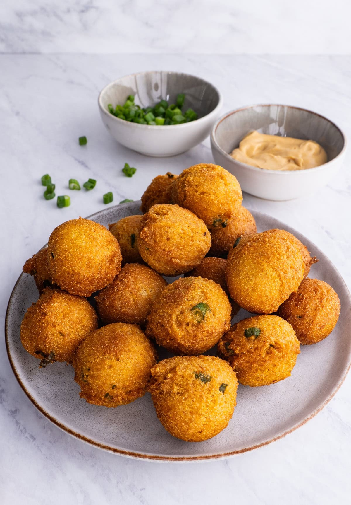

Hushpuppies
Classic Hush Puppies Recipe
This recipe is adapted from Mueller, J. (2025, May 12). Classic Hush puppies recipe. The Roasted Root.
https://www.theroastedroot.net/hushpuppies/

photo by: Mueller, J. (2025, May 12). Classic Hush puppies recipe. The Roasted Root. https://www.theroastedroot.net/hushpuppies/
Ingredients
- 1 1/2 cup cornmeal (fine grind or medium grind)
- 2 cup all-purpose flour (or gluten-free all-purpose flour)
- 1/2 tsp baking soda
- 1 tsp baking powder
- tsp garlic powder
Equipment
- bowl
- tablespoon
- arge thick-bottomed pot or saucepan
- a heat resistant spoon
- cups
Directions
1. Add all of the dry ingredients to a large bowl and and whisk to combine. This includes the cornmeal,
flour, baking powder, baking soda, garlic powder, paprika, sea salt, and cane sugar.
2. Add the wet ingredients (onion, buttermilk, and beaten egg) to the dry mixture. Mix until
combined.
3. In a large saucepan or a heavy-bottomed pot, heat about 3 – 4 cups of canola oil to 350 degrees. A
Dutch oven or large cast iron skillet works great.
4. Using your hands (or a small cookie scoop), form balls. A tablespoon worth of dough works great.
Carefully drop the dough balls in the hot oil with a heat resistant slotted spoon.
5. Hushpuppies are ready when they are golden brown and reach your desired level of crisp. Frying only
takes a minute or two.
6. Move the cooked hush puppies to a paper towel-lined plate or baking sheet covered with paper towels.
Continue the process until all of the batter is used up.Serve alongside your main dish with tartar sauce and
enjoy!
This page created as academic activity only.